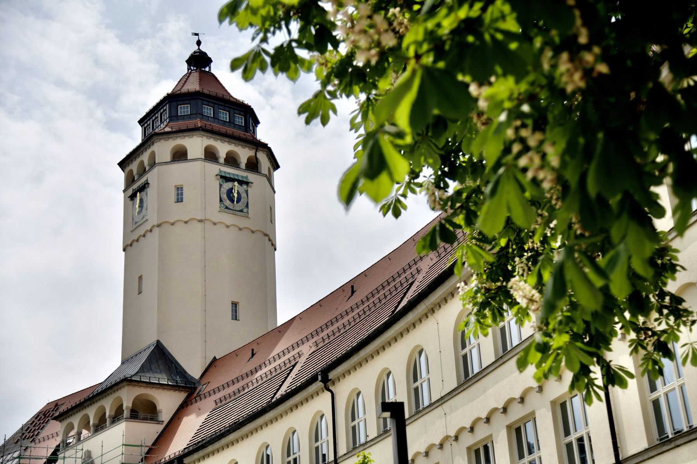
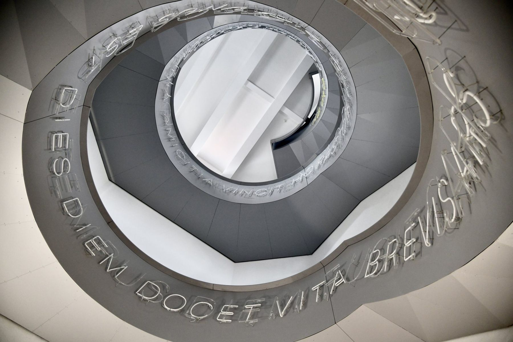

Ein Haus, viele Generationen
Seit 1912 wird hier gelernt. Seit 1991 helfen wir dabei.
Die Freunde des OvMG e.V. sind der Förderverein des Oskar-von-Miller-Gymnasiums – des früheren Alten Realgymnasiums in München.


Heute · Foto: Britta MangoldVor der Generalsanierung
Chronik
Die wichtigsten Stationen – Lücken ergänzt der Vorstand.
- 1912
Am 18. September wird das Schulgebäude an der Siegfriedstraße eingeweiht.
- [Jahr]
Aus dem Alten Realgymnasium wird das Oskar-von-Miller-Gymnasium.
- 1991
Gründung der Freunde des OvMG e.V.
- [Jahr]
Generalsanierung des Stammgebäudes.
- Heute
[Zahl] Mitglieder unterstützen Schülerinnen, Schüler und Lehrkräfte.
Was geblieben ist
Neue Räume, alte Botschaften: Viele Details erzählen bis heute von der Geschichte der Schule.



Fotos: Britta MangoldSchreiben Sie das nächste Kapitel mit.
Mitglied ab 10 € im Jahr (Schüler, Studierende, Auszubildende), regulär 30 €. Mitgliedsbeiträge und Spenden sind steuerlich absetzbar.
- Empfänger
- Freunde des OvMG e.V.
- IBAN
- DE69 7015 0000 0111 1418 18
- BIC
- SSKMDEMM
- Bank
- Stadtsparkasse München

Vorstand und Kontakt
Vorstand
- Christian J. Hartmann1. Vorsitzender
- Dr. Stephan Ring2. Vorsitzender
- Moritz PöllathKassenführung
Anschrift
Freunde des OvMG e.V.
c/o Oskar-von-Miller-Gymnasium
Siegfriedstraße 22
80803 München